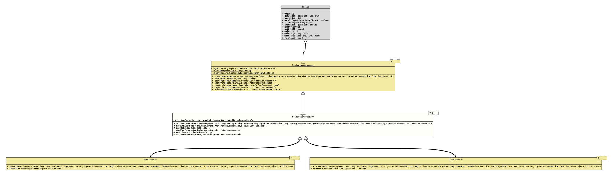

Class CollectionAccessor<T, C extends Collection<T>>
java.lang.Object
org.tquadrat.foundation.config.spi.prefs.PreferenceAccessor<C>
org.tquadrat.foundation.config.spi.prefs.CollectionAccessor<T,C>
- Type Parameters:
T- The component type of theCollection.C- The type of theCollection.
- Direct Known Subclasses:
ListAccessor, SetAccessor
@ClassVersion(sourceVersion="$Id: CollectionAccessor.java 1061 2023-09-25 16:32:43Z tquadrat $")
@API(status=STABLE,
since="0.0.1")
public abstract sealed class CollectionAccessor<T, C extends Collection<T>>
extends PreferenceAccessor<C>
permits ListAccessor<T>, SetAccessor<T>
The abstract base class for implementations of
PreferenceAccessor
for instances of implementations of
Collection.
- Note:
-
- This class requires that there is an implementation of
StringConverteravailable for the collection's component type.
- This class requires that there is an implementation of
- Author:
- Thomas Thrien (thomas.thrien@tquadrat.org)
- Version:
- $Id: CollectionAccessor.java 1061 2023-09-25 16:32:43Z tquadrat $
- Since:
- 0.0.1
- UML Diagram
-

UML Diagram for "org.tquadrat.foundation.config.spi.prefs.CollectionAccessor"
{kind=link}
-
Field Summary
FieldsModifier and TypeFieldDescriptionprivate final StringConverter<T> The instance ofStringConverterthat is used to convert the collection component values. -
Constructor Summary
ConstructorsModifierConstructorDescriptionprotectedCollectionAccessor(String propertyName, StringConverter<T> stringConverter, Getter<C> getter, Setter<C> setter) Creates a newCollectionAccessorinstance. -
Method Summary
Modifier and TypeMethodDescriptionprotected abstract CcreateCollection(int size) Creates the collection data structure.protected final TfromString(Preferences node, int index, String s) Converts the given String to an instance of the property type.final voidreadPreference(Preferences node) Reads the preference value from the given node and writes it to the property.protected final StringConverts the given instance of the property type to a String.final voidwritePreference(Preferences node) Writes the preference value from the property and writes it to the given node.Methods inherited from class PreferenceAccessor
getPropertyName, getter, hasKey, setter
-
Field Details
-
m_StringConverter
The instance ofStringConverterthat is used to convert the collection component values.
-
-
Constructor Details
-
CollectionAccessor
protected CollectionAccessor(String propertyName, StringConverter<T> stringConverter, Getter<C> getter, Setter<C> setter) Creates a newCollectionAccessorinstance.- Parameters:
propertyName- The name of the property.stringConverter- The implementation ofStringConverterfor the component type.getter- The property getter.setter- The property setter.
-
-
Method Details
-
fromString
protected final T fromString(Preferences node, int index, String s) throws InvalidPreferenceValueException Converts the given String to an instance of the property type.
This implementation uses
StringConverter.fromString(CharSequence)for the conversion.- Parameters:
node- ThePreferencesnode that provides the value.index- The value index.s- The String value; can benull.- Returns:
- The value instance; will be
nullif the provided String isnullor cannot be converted to the type of the property. - Throws:
InvalidPreferenceValueException- The preferences value cannot be translated to the property type.
-
createCollection
Creates the collection data structure.- Parameters:
size- The suggested size of the collection; can be ignored if not appropriate.- Returns:
- The collection data structure.
-
readPreference
public final void readPreference(Preferences node) throws BackingStoreException, InvalidPreferenceValueException Reads the preference value from the given node and writes it to the property.- Specified by:
readPreferencein classPreferenceAccessor<C extends Collection<T>>- Parameters:
node- The preference node.- Throws:
BackingStoreException- There are problems on reading the given node.InvalidPreferenceValueException- The preferences value cannot be translated to the property type.
-
toString
Converts the given instance of the property type to a String.
This implementation uses
StringConverter.toString(Object)for the conversion.- Parameters:
t- The property value; can benull.- Returns:
- The String implementation; will be
nullif the provided value isnullor cannot be converted to a String.
-
writePreference
Writes the preference value from the property and writes it to the given node.- Specified by:
writePreferencein classPreferenceAccessor<C extends Collection<T>>- Parameters:
node- The preference node.- Throws:
BackingStoreException- There are problems on writing the given node.
-